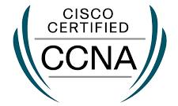
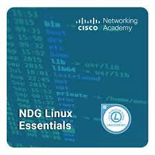
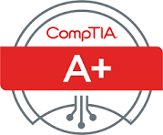

Education & Certifications
Middlesex University – Nairobi Campus
BSc. Business Information Technology (Graduated 2017)
During my bachelor’s, I worked on several hands-on projects that really shaped my approach to tech. One of my favorites was building an online storage system with two-factor authentication. It taught me how to think about security from day one. I also explored strategic management, where I analyzed how technological trends affect organizations, and dabbled in computer networks.
My ethics project looked at government surveillance, which made me question how tech impacts society. Overall, this program laid the foundation for my DevOps and cybersecurity path. What project during your studies challenged your thinking the most?
Certifications
Security+

CCNA

Linux Essentials
DevNet Associate

A+ / N+
AWS

CyberOps Associate
Technical Skills
- PC Repair & Troubleshooting
- Firewall Management (pfSense, iptables)
- Virtualization (Proxmox, Hyper-V)
- SIEMs (Wazuh, Splunk basics)
- Basic Scripting (Bash, PowerShell)
- Network Diagnostics (Wireshark, tcpdump)